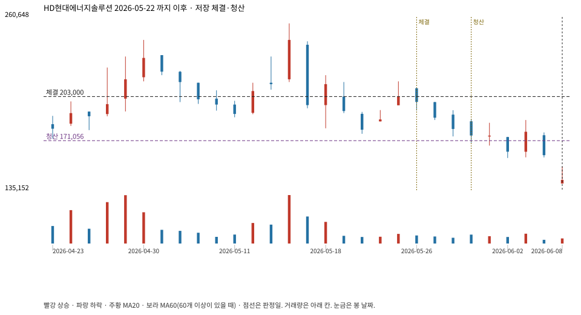

계좌를 다시 돌리지 않았다. 아래는 저장된 주문·체결·청산·비용·손익이다.

{
"case_id": "27ab1b065f03f120",
"status": "closed",
"trade": {
"symbol": "322000.KS",
"signal_date": "2026-05-22",
"quantity": 1,
"entry": 203000,
"stop": 171142,
"target": 256000,
"planned_risk": 32317.627428999956,
"reserved_cash": 203202.99999999997,
"fill": {
"date": "2026-05-26",
"price": 203000,
"fee": 203
},
"exit": {
"date": "2026-05-29",
"price": 171056.429,
"reason": "stop",
"net_pnl": -32317.627428999956,
"ambiguous_bar": false
}
},
"cost": "research fee 10bp each side, slippage 5bp; amounts below are the stored ledger, not a new run",
"chart": "c\/27ab1b065f03f120.svg"
}